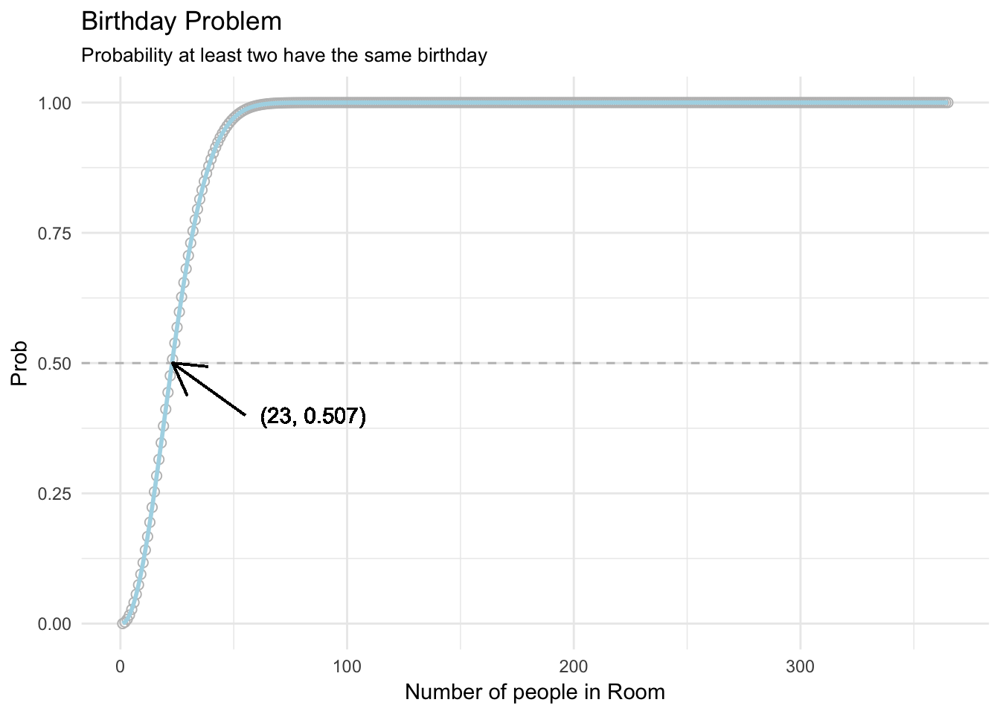

The engines! Why? Because the planes whose engines were damaged never came back! This is a classic example of a sampling bias in data.
Paul was an Octopus. Check out his Wikipedia page https://en.wikipedia.org/wiki/Paul_the_Octopus to learn more.
Believe it or not, the answer is 1/3! Why? Well, for two children, there are 4 different combinations of gender sequences: 1. Male - Male, 2. Male - Female, 3. Female - Male, 4. Female - Female. If one of the children is female, then the the 1. Male - Male combination is out, leaving the three combinations 2. Male - Female, 3. Female - Male, 4. Female - Female. Of these 3 combinations only one has two females. Therefore, the probability is 1/3!
Answer: You should switch! To see why consider the following two possible situations you may find yourself
Situation A: Door No. 1 (your first guess) DOES have the car Situation B: Door No. 1 does NOT have the car
If you are in Situation A, then you should NOT switch, and you will get the car for sure. If you are in Situation B, then you SHOULD switch, and you will get the car for sure (because the host would not have removed the door with the car). Now, all you have to ask yourself is, what are the probabilities you’re in situations A and B? Well, the probability of situation A is 1/3 (assuming the location of the car was randomly determined), and the probability of situation B is 2/3 (1 - 1/3). Because it’s twice as likely that you are in a situation where you should switch, than one where you should not switch, you are better off switching than staying.
If you got this wrong, don’t feel bad. This is the famous Monty Hall problem, one of the classic probability brain teasers that, in the 1990s, fooled hundreds of PhD statisticians! See https://en.wikipedia.org/wiki/Monty_Hall_problem for more details on this famous problem.
If you played this game infinitely many times, you’d earn an infinite amount of money! To see why, calculate the expected value of the game as follows: there is a 1/2 chance that the tail comes on the first flip, giving you $2. There is a 1/4 chance that the first tail comes on the second flip, giving you $4. There is a 1/8 chance that the first tail comes on the third flip, giving you $8. Thus, the expected value of the game is equal to:
\[ \frac{1}{2} \times 2 + \frac{1}{4} \times 4 + \frac{1}{8} \times 8 + ... = 1 + 1 + 1 + ... = \infty \]
The amount of money you’d be willing to play this game, of course, has no right or wrong answer. In fact, despite the fact that the expected value of the game is infinite, most people would be unwilling to spend more than $10 on this game. This finding is known as the St. Petersburg paradox. Economists and decision scientists will know this problem well as it was ‘solved’ by Daniel Bernoulli’s idea in the early 1700s that the utility (value) of money is not equal to its raw monetary value, but rather is a monotonically decreasing function of the raw value. In other words, the relative benefit of earning $100 relative to $50 is much higher than the relative benefit of earning $10,000 to $9,500. When this is the case, and depending on the player’s initial wealth, the value of the game can be less than $10. See the St. Petersburg Paradox Wikipedia page for more info.
Answer: 15/16. To calculate this calculate the probability that all 4 flips will be tails, then take the compliment. The probability that all 4 flips will be Tails is \(\frac{1}{2} \times \frac{1}{2} \times \frac{1}{2} \times \frac{1}{2} = 1/16\). Therefore, the probability of getting at least one head is \(1 - \frac{1}{16} = \frac{15}{16}\)
Aaaaa, the birthday problem. Who doesn’t love the birthday problem? The best way to solve this is to remember the answer from the last time you heard it. If you can’t remember, or worse yet, haven’t heard it before, you’re in trouble, because the answer is much lower than you would intuitively think. To come up with the answer, you need to calculate the probability that \(k\) people all have DIFFERENT birthdays, and then take the compliment (1 minus that number). For example, the probability that 5 people all have different birthdays is \(\frac{365}{365} \times \frac{364}{365} \times \frac{363}{365} \times \frac{362}{365} \times \frac{361}{365} = 0.973\) To find out the minimum number of people in a room for the probability to exceed 0.5, you need to find out when the following equation is just over 0.50:
\[ 1 - \prod_{i=1}^{k} \frac{365-(k-1)}{365} \]
We can easily calculate the probabilities for each value of k from 1 to 366 as follows:
different_bdays <- data.frame(
k = 1:365,
prob = sapply(1:365, FUN = function(x) {
1 - prod((365 - ((1:x) - 1)) / 365)}
))Here are the values for each multiple of 10 up until 100 people:
| k | prob |
|---|---|
| 1 | 0.0000000 |
| 10 | 0.1169482 |
| 20 | 0.4114384 |
| 30 | 0.7063162 |
| 40 | 0.8912318 |
| 50 | 0.9703736 |
| 60 | 0.9941227 |
| 70 | 0.9991596 |
| 80 | 0.9999143 |
| 90 | 0.9999938 |
| 100 | 0.9999997 |
Here’s a plot of all values
library(ggplot2)
ggplot(different_bdays,
aes(x = k, y = prob)) +
geom_point(shape = 1, col = "gray", size = 2) +
geom_line(col = "lightblue", size = 1) +
geom_hline(mapping = aes(yintercept = .5), linetype = 2, col = "gray") +
geom_segment(mapping = aes(x = 55, y = .4, xend = 23, yend = .5),
arrow = arrow(ends = "last")) +
geom_text(mapping = aes(x = 55, y = .4, label = "(23, 0.507)"), nudge_x = 30) +
labs(title = "Birthday Problem",
subtitle = "Probability at least two have the same birthday",
x = "Number of people in Room",
y = "Prob") +
theme_minimal()
The answer is just 9%. To get this, we use Bayes Theorem as follows:
\[ p(Cancer | Positive) = \frac{BR \times HR}{BR \times HR + (1 - BR) \times FAR} = \frac{0.01 \times 0.90}{0.01 \times 0.90 + (1 - 0.01) \times 0.09} = 0.09 \]
If you got this wrong don’t feel bad, even medical doctors routinely get it wrong. Research by Gerd Gigerenzer and colleagues show that the best way to help people get the answer right is to re-phrase the problem in terms of natural frequencies. That is, in reference to a set of 1,000 cases. For example, one could rephrase the problem as:
The statistical information contained in this phrasing is identical to the original phrase. However, it is much easier to calculate the correct answer as 9 / (9 + 98) = 9%. For more examples and tips on how to communicate and understand risk, check out Gigerenzer’s book Risky Savvy
From Wikipedia: A p-value is the probability for a given statistical model that, when the null hypothesis is true, the statistical summary (such as the sample mean difference between two compared groups) would be the same as or of greater magnitude than the actual observed results.
I find Wikipedia’s definition a bit wordy, so here’s mine: The probability of obtaining a test statistic as extreme or more extreme than the one obtained, given that the null hypothesis is true.
They are equally likely. The probability of each is \(\frac{1}{2} \times \frac{1}{2} \times \frac{1}{2} \times \frac{1}{2} \times \frac{1}{2} \times \frac{1}{2} = \frac{1}{16}\). However, most people guess A because the sequence ‘looks’ more like one you would get from random coin flips. To learn more about how people make intuitive probability judgments, see Tversky & Kahneman’s 1974 Science article titled Judgment under Uncertainty: Heuristics and Biases.
Answer: Central Limit. I once planned to memorize the proof of the theorem so I could ‘casually’ show it off at parties. Somehow I never got around to it.
Answer: Most people say Carl Friedrich Gauss (1795), but according to Wikipedia, it was first published by Adrien-Marie Legendre.
Answer: Wisdom of (the) crowds. Check out James Surowiecki’s great book Wisdom of Crowds to see how groups can be smarter than even their smartest individual members.
Answer: Ronald Fisher. Though he certainly did not intend for it to become the monstrosity it has become today. See this Nature article for reasons why.
Answer: Monty Python. And rather than posting a Monty Python clip that everyone has likely already seen, here’s a great clip from The Germans episode of Fawlty Towers starring John Cleese (one of the most well known members of Monty Python).
Answer: Black Box. While black box algorithms can be incredibly effective, there is increasing pressure to reduce our reliance on them, especially when making decisions that affect people’s lives. Read the MIT Technology Review article The Dark Secret at the Heart of AI and watch Cathy O’Neil’s Ted Talk titled Weapons of Math Destruction to find out why.
Answer: Overfit.
Answer: Markov Chain Monte Carlo. See https://en.wikipedia.org/wiki/Markov_chain_Monte_Carlo for details on how MCMC chains work.
Answer: Statistical Packages for the Social Sciences. I also would have accepted Shitty Piece of Shitty Shit.
Answer: Supervised, unsupervised. See https://en.wikipedia.org/wiki/Unsupervised_learning and https://en.wikipedia.org/wiki/Supervised_learning for definitions.